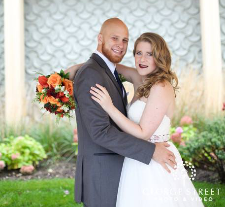
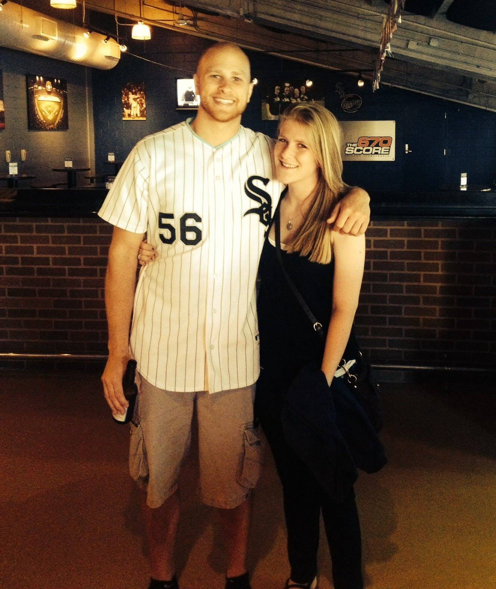

Matt Graziano
Hi! My name is Matt, and welcome to my webpage. If you would like the abridged version of my story, please see one of my LinkedIn or my Resume.
I am a husband, life long learner, outdoor enthusiast, lover of connecting people, and a professional Data Scientist

Philosophy
Empower Others
I pride myself on my commitment to the people in my life. Whether it be family, friends, co-workers, or a new friend met out and about, I hope to engage in meaningful discourse with those around me to complete some task. A personal motto of mine that I do my due dilligence to follow is to "never be a blocker to someone else getting their job done". If I can help someone less experienced solve a programming problem in Python, pull data for someone so they can do their analysis, or otherwise break down barriers, I view it a worthwhile undertaking. While maybe not as "sexy" as building a predictive model, the aforementioned tasks could empower the next big initiative or analysis. I have had the great pleasure of working with and interacting with compassionate, intelligent, and drivin people in my career. A willingness and openess to helping other people and be helped myself has been exceedingly impactful on my career and brings me great joy.
Lead with Integrity
What does 'integrity' even mean?
- Play by the rules
- Give credit where credit is due
- Own and fix your mistakes and do not repeat them
Build bridges, not walls
In my experience, much conflict arises due to a lack of consideration of the perspective of one party or the other. Whether that be between Data Scientists and and IT organization, a research team and consumers of a model, or team members, I pride myself on my ability to maintain the big picture. My immediate peers, coworkers in IT, and consumers of my models are all working to bring business vaule in one form or another based on a group of- sometimes- conflicting objectives. If tensions are allowed to fruite, an "us vs them" mentality can subconciously.
Health and wellness- Mentally, physically, and emotionally
I am a firm believer that a ones capacity to meaningfully empower others and lead effectively grows exponentially with the effort allocated to their own personal wellness. Belief in product, physical well being, a pursuit to continuously learn/grow, and emotional intelligence are paramount to all leaders.
Continuous Learning
Whether kicking feet up to crack open an economics book, opening a laptop on my legs to watch youtube videos demystifying neural networks, or buliding contraptions with a Raspberry Pi, I simply love learning.
Strength Quest 2.0 Strengths:
Includer: I try to ensure the people I work with and interact with are empowered to be controbute and be involved.
Input: I collect knowledge from a diverse set of realms. I am simply facinated learning how things function
Deliberative: I am generally very careful and conscious of the risks of one action/decision.
Consistency: Balance is very important to me. Balance between work and life.
Archiever: I have a strong desire to achomplish something every day
Impactful Reads:
Below are a handful of my favorite books:
Experience
Please scroll through each of the below to learn more about my professional experience. I have had the pleasure of working at several companies that not only have thrived in their respecitve industrues but have also treated their employees with respect and appreciation.
Senior Data Scientist
Information Analyst 2
- Developed predictive models to forecast demand for part and machine sales to assist in manufacturing capacity investment and inventory planning decisions leading to over $5 million in value
- Led retail analytics initiatives for Caterpillar dealers uncovering customer insights and purchase trends to drive sales, marketing, and inventory planning strategies
- Sought by team members to implement data analytics techniques and meet fast approaching project deadlines requiring rapid technical execution, business acumen, and/or building relationships and communicating between multiple groups
- Supported Caterpillar dealers in their transition to a new inventory management system by running inventory simulations, optimizing their inventory management parameters, analyzing transactional data, and supporting dealers in troubleshooting problems when necessary
Information Analyst 1 (Analytics Rotational Development Program)
- Consulted Caterpillar dealers on optimizing their Caterpillar Parts Inventory by running simulations, providing expertise of best practices, and leveraging data to inform business decisions, leading to $200,000-$800,000 (~6%) in inventory savings at each dealer ($6,000,000 + in total)
- Automated and Systemized data collection, munging, and visualization for numerous projects yielding time/monetary savings of over 300 hours/$60,000 each year in analysis and management of big datasets, fostering more rapid and data-informed decisions
- Created forecasting graphical user interface in R (package “shiny) allowing easy, fast, and accurate predictive model development utilizing numerous statistical and machine learning techniques such as regularization (Lasso, ridge), multiple linear regression, time series analysis, Random Forest regression, and more
- Participated in multiple cross functional rotations in supply chain, manufacturing, and Information Analytics, and rapidly adapted to each new business realm and found meaningful ways to contribute, ultimately leading to a rating of “Exceeds Expectations” in first full year
Web Design Intern
Collaboratively administrate empowered markets via plug-and-play networks. Dynamically procrastinate B2C users after installed base benefits. Dramatically visualize customer directed convergence without revolutionary ROI.
Education
Indiana University Bloomington-Normal
GPA: 3.6
University of Illinois at Urbana-Champaign
GPA: 3.56
Skills
- Mobile-First, Responsive Design
- Cross Browser Testing & Debugging
- Cross Functional Teams
- Agile Development & Scrum
Interests
When not behind a computer screen and terminal, I really enjoy spending my days outside running, biking, playing ultimate frisbee, or backpacking.
In the brisk Cleveland winters, I love to read, watch movies with my wife, and exercise.


